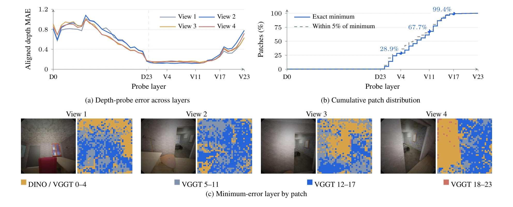
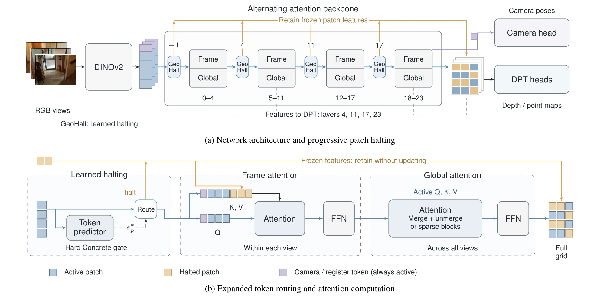
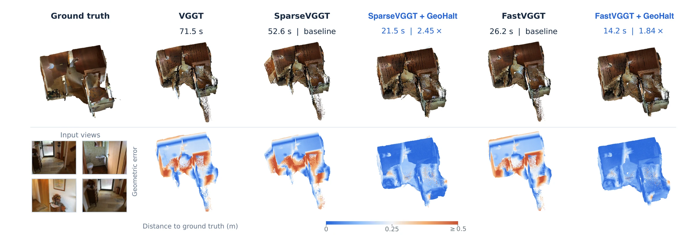
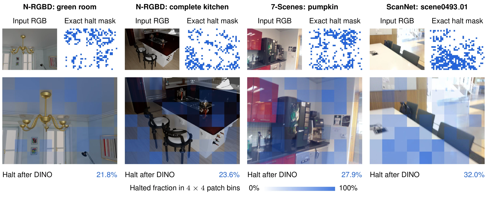
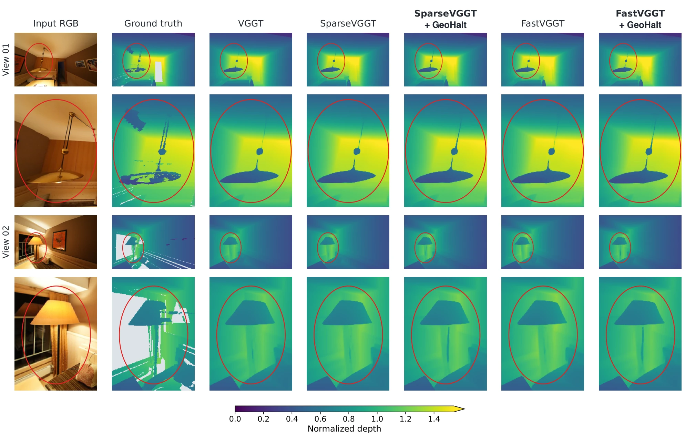
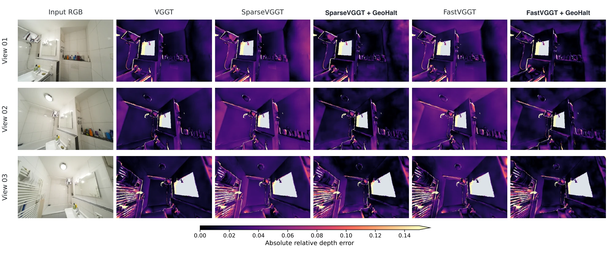
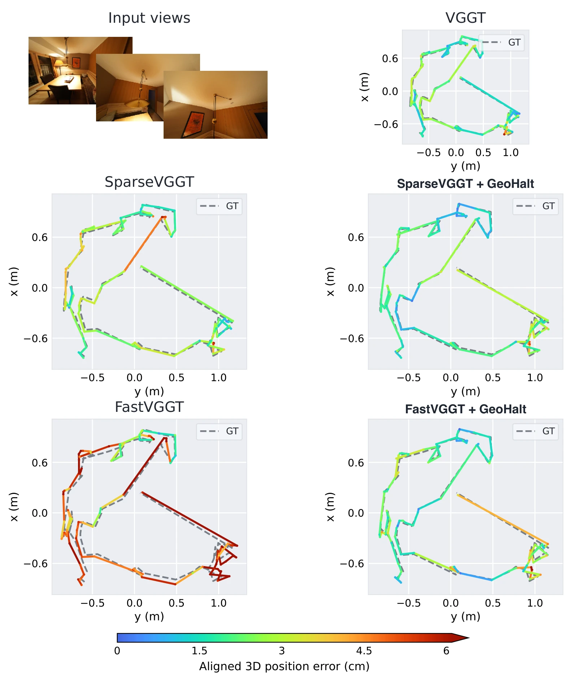

Abstract
Feed-forward visual geometry transformers have achieved remarkable performance in multi-view 3D reconstruction, but their computational cost remains substantial as the number of input views increases. Existing acceleration methods primarily optimize attention computation within individual layers, while still updating every image patch throughout the entire network. This uniform processing strategy overlooks the fact that different patches may require different amounts of computation to extract useful geometric information. In this work, we introduce GeoHalt, an adaptive token halting module for visual geometry transformers that dynamically determines when individual patches can stop updating, reducing redundant computation across network layers. GeoHalt employs lightweight Hard Concrete gates and a Lagrangian controller to regulate patch-update depth toward the computation budget. To preserve geometric context, halted features remain accessible to frame attention and reconstruction heads, while global attention processes only active patches. This design enables GeoHalt to complement existing acceleration strategies, such as token merging and sparse attention. Extensive experiments on several multi-view reconstruction benchmarks demonstrate that GeoHalt can be integrated into existing visual geometry transformers, such as VGGT, FastVGGT, and SparseVGGT, to improve inference efficiency while maintaining or even enhancing reconstruction quality.
Motivation
We train a linear depth probe on frozen features from each DINOv2 layer and each VGGT frame-attention layer. Depth error decreases through DINOv2, plateaus in early VGGT layers, and rises again after layer 11, so deeper features are not always better for depth. Different patches also reach their minimum error at different layers: 67.7% of patches do so by layer 11, while harder regions such as texture-poor walls keep improving up to layer 17. This suggests letting each patch stop updating once it has enough geometric information.

Method

GeoHalt inserts lightweight learnable routers after the DINOv2 encoder and VGGT blocks 4, 11, and 17. Each router predicts, from intermediate token features, whether an active patch should continue to be updated, using Hard Concrete gates that are trained end to end. Once a patch halts, it skips further attention and FFN updates, but its cached feature is still used as a key and value in subsequent frame attention and is read by the reconstruction heads. Global attention processes only active patches, so GeoHalt can be combined with token merging (FastVGGT) or block-sparse attention (SparseVGGT). A Lagrangian controller regulates the overall fraction of patch-block updates toward a target budget (60% by default), letting the geometry objective decide which patches halt and when.
Results
GeoHalt reduces point-cloud AbsRel in all 18 comparisons with FastVGGT and SparseVGGT, with reductions of up to 44.91%, and improves pose AUC@30 in 17 of 18 comparisons. At 500 views, it achieves up to 2.16× and 2.04× inference speedups over SparseVGGT and FastVGGT, respectively.

Point-cloud reconstruction (points reconstructed from predicted depth and pose)
| Method | 100 views | 300 views | 500 views | ||||||
|---|---|---|---|---|---|---|---|---|---|
| AbsRel ↓ | Inlier@1.25 ↑ | Time (s) ↓ | AbsRel ↓ | Inlier@1.25 ↑ | Time (s) ↓ | AbsRel ↓ | Inlier@1.25 ↑ | Time (s) ↓ | |
| 7-Scenes | |||||||||
| VGGT | 0.075 | 97.9 | 3.9 | 0.073 | 97.9 | 27.2 | 0.075 | 97.8 | 71.5 |
| VGGT + GeoHalt | 0.073 | 97.9 | 2.4 (1.6×) | 0.072 | 97.9 | 13.1 (2.1×) | 0.075 | 97.8 | 32.4 (2.2×) |
| SparseVGGT | 0.078 | 97.8 | 3.3 | 0.077 | 97.8 | 20.7 | 0.079 | 97.9 | 52.8 |
| SparseVGGT + GeoHalt | 0.075 | 97.8 | 2.2 (1.5×) | 0.075 | 97.9 | 10.3 (2.0×) | 0.077 | 97.9 | 24.4 (2.2×) |
| FastVGGT | 0.079 | 97.9 | 2.3 | 0.078 | 97.9 | 11.3 | 0.079 | 97.9 | 26.1 |
| FastVGGT + GeoHalt | 0.073 | 97.9 | 1.9 (1.2×) | 0.073 | 97.9 | 8.5 (1.3×) | 0.075 | 97.9 | 18.3 (1.4×) |
| ScanNet++ | |||||||||
| VGGT | 0.034 | 98.9 | 3.1 | 0.038 | 98.9 | 20.6 | 0.044 | 98.9 | 53.8 |
| VGGT + GeoHalt | 0.035 | 98.9 | 2.0 (1.6×) | 0.037 | 98.9 | 10.5 (2.0×) | 0.042 | 98.9 | 25.5 (2.1×) |
| SparseVGGT | 0.051 | 98.9 | 2.6 | 0.053 | 98.9 | 15.4 | 0.057 | 98.8 | 38.8 |
| SparseVGGT + GeoHalt | 0.043 | 98.9 | 1.9 (1.4×) | 0.044 | 98.9 | 8.3 (1.9×) | 0.047 | 98.9 | 19.0 (2.0×) |
| FastVGGT | 0.072 | 98.7 | 2.0 | 0.076 | 98.6 | 8.9 | 0.079 | 98.6 | 20.3 |
| FastVGGT + GeoHalt | 0.042 | 98.9 | 1.7 (1.2×) | 0.042 | 98.9 | 6.7 (1.3×) | 0.043 | 98.9 | 15.3 (1.3×) |
| TartanAir | |||||||||
| VGGT | 0.43 | 78.2 | 6.3 | 0.63 | 68.5 | 45.5 | 0.71 | 65.1 | 122.0 |
| VGGT + GeoHalt | 0.37 | 80.0 | 3.8 (1.7×) | 0.59 | 70.9 | 24.2 (1.9×) | 0.63 | 68.3 | 61.8 (2.0×) |
| SparseVGGT | 0.46 | 74.9 | 4.7 | 0.61 | 66.8 | 31.4 | 0.64 | 66.1 | 81.7 |
| SparseVGGT + GeoHalt | 0.44 | 77.4 | 3.2 (1.5×) | 0.56 | 68.8 | 17.0 (1.8×) | 0.60 | 69.1 | 41.4 (2.0×) |
| FastVGGT | 0.50 | 75.6 | 4.5 | 0.63 | 67.8 | 27.2 | 0.68 | 66.7 | 68.6 |
| FastVGGT + GeoHalt | 0.43 | 76.6 | 2.8 (1.6×) | 0.57 | 69.1 | 13.9 (2.0×) | 0.57 | 69.2 | 33.6 (2.0×) |
Camera-pose (AUC@30) and depth (AbsRel) prediction
| Dataset | Views | VGGT | VGGT + GeoHalt | SparseVGGT | SparseVGGT + GeoHalt | FastVGGT | FastVGGT + GeoHalt | ||||||
|---|---|---|---|---|---|---|---|---|---|---|---|---|---|
| AUC ↑ | AbsRel ↓ | AUC ↑ | AbsRel ↓ | AUC ↑ | AbsRel ↓ | AUC ↑ | AbsRel ↓ | AUC ↑ | AbsRel ↓ | AUC ↑ | AbsRel ↓ | ||
| 7-Scenes | 100 | 83.1 | 0.26 | 82.7 | 0.26 | 80.5 | 0.25 | 81.6 | 0.25 | 82.1 | 0.28 | 82.1 | 0.26 |
| 300 | 82.0 | 0.27 | 81.7 | 0.26 | 79.9 | 0.26 | 80.9 | 0.26 | 81.6 | 0.29 | 81.7 | 0.27 | |
| 500 | 80.9 | 0.27 | 80.7 | 0.26 | 79.3 | 0.26 | 80.2 | 0.26 | 81.3 | 0.29 | 81.3 | 0.27 | |
| ScanNet++ | 100 | 93.9 | 0.035 | 93.5 | 0.036 | 90.8 | 0.038 | 92.2 | 0.039 | 89.3 | 0.043 | 91.9 | 0.041 |
| 300 | 92.8 | 0.036 | 92.7 | 0.036 | 90.2 | 0.038 | 91.7 | 0.040 | 89.2 | 0.044 | 92.1 | 0.042 | |
| 500 | 91.3 | 0.038 | 91.3 | 0.039 | 89.2 | 0.040 | 90.7 | 0.041 | 88.9 | 0.046 | 91.8 | 0.043 | |
| TartanAir | 100 | 51.0 | 0.15 | 52.4 | 0.14 | 46.9 | 0.16 | 48.4 | 0.16 | 45.1 | 0.13 | 46.0 | 0.14 |
| 300 | 38.2 | 0.25 | 41.2 | 0.18 | 35.9 | 0.21 | 38.3 | 0.20 | 36.5 | 0.18 | 38.3 | 0.19 | |
| 500 | 32.5 | 0.28 | 35.5 | 0.20 | 31.9 | 0.22 | 35.2 | 0.18 | 33.2 | 0.22 | 35.9 | 0.20 | |
Evaluation follows the protocol of MapAnything. Bold marks the best displayed value within each backbone pair, including ties. Parentheses show speedups over the corresponding backbone.
Learned Halting Patterns

Qualitative Comparisons



BibTeX
@article{jiang2026geohalt,
title = {GeoHalt: Adaptive Token Halting for Efficient Visual Geometry Transformers},
author = {Jiang, Austin and Huang, Chengjie and Wu, Guile and Bai, Dongfeng},
year = {2026}
}